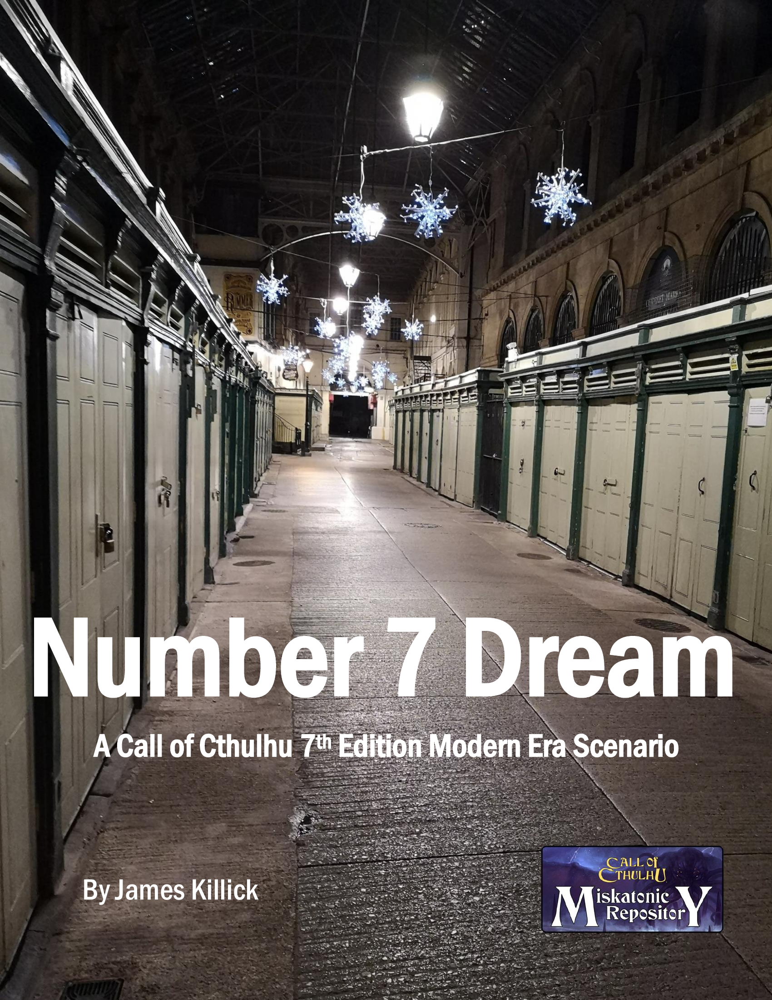
АВТОРЫ И СОЗДАТЕЛИ
Текст: Джеймс Киллик. Фотографии и иллюстрации: Джеймс Киллик
«Сон № 7» © 2021 Джеймс Киллик
Особая благодарность команде плейтестеров «Сна № 1»: Корнелиусу Буту, Аманде Хорлок и Джейми Стюарту
ВВЕДЕНИЕ
Всё ли, что мы видим или воображаем, — лишь сон внутри сна? «Сон во сне», Эдгар Аллан По
Мозг каждого сыщика заключён в мозговую капсулу ми-го. К счастью, они об этом не подозревают — по крайней мере пока: ми-го хотят узнать кое-что известное сыщикам, но забытое ими, — где находится некая Элси Уэбб.
Ми-го разработали «машины памяти»: они погружают законсервированные мозги в состояние сна и создают виртуальный конструкт, где человеческий разум может исследовать свои воспоминания, словно переживая их заново. Ми-го способны добавлять в конструкт искусственные элементы, чтобы влиять на действия сыщиков и наблюдать за ними. Именно в таком конструкте — Конструкте 7 — сыщики оказались, сами того не зная.
Приключение рассчитано на 2–5 игроков. В конце сценария приведены шесть готовых персонажей игроков. Каждый из них так или иначе связан с Элси и/или её отцом Стэнвиком.
В этом приключении сыщики уже обречены, поэтому оно плохо подходит для включения в существующую кампанию. Жестокий Хранитель может предложить игрокам создать собственных сыщиков, если они захотят, но перед началом игры рекомендуется связать их со Стэнвиком.
Формально действие происходит около 2020 года в английском городе Бристоле, однако Хранитель без труда может изменить место и время.
ПРЕДЫСТОРИЯ
Ми-го десятилетиями похищали человеческие разумы и создали подставную «оздоровительную» организацию, чтобы прикрыть свою деятельность на Земле. Элси — глубоко сопереживающая, склонная к ярким снам гипнотизёрша, которая постоянно страдала за других, — вступила в эту организацию, «Просветлённые», надеясь обрести душевный покой. Благодаря своим способностям она быстро заинтересовала ми-го, которые очень хотели поставить на ней опыты.
Элси узнала, чем на самом деле занимаются «Просветлённые», прежде чем они успели извлечь её мозг, и скрылась. Она никому не сказала, где находится, даже собственному отцу. Элси знает, что ми-го способны против воли извлекать из мозга людей знания — даже те, о которых сами люди не подозревают.
Сыщики уже пережили это приключение, просто не помнят его. Ми-го собираются помочь им вспомнить.
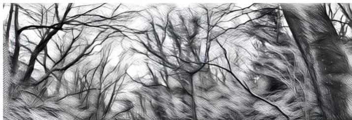
ЧТО СЛУЧИЛОСЬ С СЫЩИКАМИ?
До того как ми-го схватили сыщиков, их нанял Стэнвик, отец Элси, чтобы найти его дочь. Начав с книжной лавки Стэнвика, сыщики затем посетили квартиру Элси и, расследовав деятельность «Просветлённых», обнаружили, что она скрывается. Элси рассказала им правду о «Просветлённых» и сообщила, что настоящий центр их деятельности — место под названием «Институт». Согласившись на гипноз Элси, чтобы в случае пленения не выдать её местонахождение, сыщики силой проникли в Институт. Там они раскрыли ужасающую правду о том, как ми-го собирают человеческие мозги. Ми-го схватили сыщиков, и, поскольку те знали слишком много, чтобы просто отпустить их, оставили в живых и извлекли их мозги. Теперь они находятся в мозговых капсулах, подключённых к Конструкту 7.
КОНСТРУКТ 7
Конструкт 7 построен из воспоминаний сыщиков и дополнен как их подсознанием, действующим внутри конструкта, так и вмешательством ми-го. Поэтому в конструкте могут происходить похожие на сны сцены и странные, нереальные события, которые встревожат сыщиков и приведут к потере Рассудка.
СБОИ
Конструкт пытается дополнить воспоминания сыщиков реалистичными подробностями, основываясь на представлениях ми-го о том, как устроены мир и человеческое общество. Неудивительно, что это не всегда удаётся: то, что ми-го считают человеческим поведением, людям покажется глубоко странным. В конструкте могут встречаться нелепо немодная одежда, странные ответы на вопросы, повторяющиеся замечания, бессмысленные фразы и причудливая мимика. Возможны и технические сбои: конструкт может зависнуть, как компьютерная игра, начать тормозить или повторять сцены. Хранитель может использовать такие явления, чтобы тревожить сыщиков, но не должен переусердствовать и отвлекать от основного сюжета. Начинайте с малого и постепенно усиливайте сбои по мере развития истории. Примеры сбоев конструкта:
- Сыщики убегают от чего-то — возможно, участвуют в погоне, — и вдруг земля становится густой, липкой, словно желе, замедляя их. При любой физической активности применяется штрафная кость.
- Кто-то идёт по небу или по воде, а затем внезапно начинают действовать привычные законы физики, и он падает на землю совершенно невредимым. Потеря Рассудка 1/1d6.
- Кто-то идёт по стене вниз. Кажется, будто гравитация тянет его вниз, но словно подошвы приклеены к стене. Он доходит до окна и проваливается сквозь него. Потеря Рассудка 1/1d6.
- Один из персонажей просыпается посреди ночи и видит маленького ребёнка, сидящего на краю кровати на корточках. Ребёнок поворачивается к нему, его лицо тает, а затем он исчезает. Потеря Рассудка 1/1d6.
- Персонажи идут или едут по улице/дороге, а через несколько секунд обнаруживают, что снова оказались на том же самом отрезке пути, который уже преодолели. Потеря Рассудка 0/1d4.
- Войдя в комнату или заговорив с кем-то, сыщик испытывает сильное дежавю — ему кажется, что он уже здесь бывал, и это действительно так. Потеря Рассудка 0/1.
СНЫ
Большая часть Конструкта 7 создана из воспоминаний сыщиков о расследовании и потому обладает сновидческим оттенком. Как и сбои конструкта, сны могут использоваться Хранителем, чтобы тревожить игроков.
Когда сыщики «спят» внутри конструкта, им снятся сны. Это сочетание отражений того, что происходит или происходило в «реальном» мире — например, того, что они видят, находясь в мозговых капсулах, или видели до пленения, — и попыток подсознания осмыслить происходящее. Каждый раз, когда сыщики засыпают, попросите их совершить проверку Идеи. Успешно прошедший её вспоминает сон.
Эти сны должны предвещать истинное положение сыщиков. Хранитель может зачитать их, описать своими словами или раздать игрокам в виде материалов.
Зал заседаний
Вы сидите за столом в большом, чистом зале заседаний корпорации. Вы удивлены, что оказались здесь. Одна стена целиком стеклянная; за ней с высоты виден городской пейзаж. Сразу не понять, какой это город — возможно, Нью-Йорк? Вид потрясающий. Вы оглядываетесь и видите за столом остальных сыщиков; они так же растеряны, как и вы. Во главе стола стоит мужчина. На нём серый костюм, белая рубашка и красный галстук. Он поворачивается к вам и улыбается, но улыбка искажена, похожа на застывший оскал. Его голова яростно, судорожно трясётся, а затем раскалывается надвое, и изнутри появляется нечто — грибной нарост. Споры разлетаются, пока плоть на лице мужчины гниёт и отпадает, образуя новую отвратительную грибную голову. Вы бросаетесь к двери, но она заперта. Вам не выбраться. Потеря РАС 0/1.
Санитар
Вы приходите в себя лёжа. Открыв глаза, вы видите, как мимо проплывают стены. Вас куда-то везут; слышен скрип колёс и шаги того, кто — или что — толкает вашу каталку. На самой границе зрения шевелятся тёмные силуэты, но стоит взглянуть на них — они уползают прочь. Коридор освещён странным тусклым коричневым светом. Вы пытаетесь встать, но не можете пошевелиться. Вы смотрите вниз, туда, где должны быть ноги, но не видите их. Пытаетесь позвать на помощь, но у вас нет рта. Пытаетесь закричать, но вас никто не слышит. Потеря РАС 0/1.
Монолит
Вы просыпаетесь в своей спальне, но у изножья кровати стоит огромная чёрная фигура. От монолита тянется органическая зелёная сеть, ползущая по постельному белью к вам. По чудовищу течёт зелёная кровь; она пульсирует в его полупрозрачных венах. Странный узор — возможно, руна, похожая на цифру «7», — ритмично бьётся, словно сердце, в такт пульсации зелёной жидкости, пока сеть смыкается вокруг вашего горла. Вы пытаетесь вырваться, но вас сковал страх, тело не слушается. Вы неподвижно лежите, пока жизнь покидает вас. Потеря РАС 0/1d3.
Чудовище
Вы идёте по улицам знакомого, но неузнаваемого города. Здесь странно тихо — не слышно уличного шума. Вы понимаете, что все вокруг — безликие манекены, движущиеся по рельсам. Они останавливаются и поворачиваются к вам; их гладкие лица похожи на тканевые маски, туго натянутые на человеческие головы. Вдруг их тела начинают трескаться, извиваться и ломаться, словно невидимые руки переламывают им конечности. Хруст костей вызывает тошноту. Вы хотите бежать, но не знаете куда: вас окружают корчащиеся манекены. Теперь у них отрастают новые конечности, тела принимают всё более странные очертания. В ушах звучит оглушительное какофоническое жужжание, будто в голове роится стая гигантских мух. Манекены превратились в неуклюжих громадных насекомых, которые дёргаются и беспомощно бьются о мостовую. Потеря РАС 0/1.
Капсулы
Вы находитесь в комнате, полной консервных банок с едой, и почему-то чувствуете непреодолимое желание открыть их все. В первой — приятные, освежающие персики, и вы съедаете их, но вкус у них какой-то неправильный. Вам нужно есть, поэтому вы открываете следующую банку, а в ней говяжья солонина, уже испортившаяся. Вы продолжаете вскрывать банки, и содержимое становится всё отвратительнее: мясо, кишащее личинками, тухлые сырые потроха. Банки делаются всё больше, а вы не можете перестать их открывать: вам необходимо что-то найти. Вы добираетесь до последней банки и открываете её. Сначала непонятно, что внутри: большая розовая мясистая цветная капуста. Потом вы понимаете, что это мозг крупного животного. Вы с отвращением отворачиваетесь и видите в тени мужчину в сером костюме. Потеря РАС 0/1.
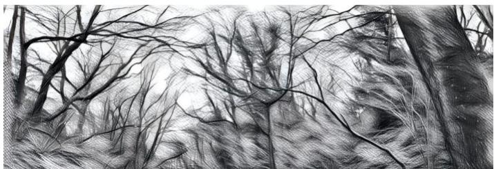
МИ-ГО
Ми-го наблюдают за сыщиками внутри Конструкта. Они пытаются выяснить, помнят ли сыщики, где находится Элси, чтобы найти её в реальном мире. В Конструкте их представляет один персонаж — мужчина, которого ми-го создали таким, каким сами считают неприметного человека. На деле он сразу бросается в глаза, поскольку ми-го совершенно не уловили человеческие тонкости стиля, манер и поведения. Человек-ми-го будет одет в элегантный, слегка устаревший серый костюм, белую рубашку и красный галстук; волосы у него коротко подстрижены. Сыщики начнут замечать этого человека: обычно он наблюдает за ними из недоступных мест.
Ми-го также могут изменять Конструкт, помогая сыщикам найти Элси: они хотят, чтобы те преуспели. Поэтому ми-го не дают сыщикам оказаться «при смерти» в конструкте. Это происходит в результате слегка странных, но объяснимых событий: полиция как нельзя кстати прибывает им на помощь, случайный прохожий вмешивается, при падении вдруг появляется матрас и тому подобное.
Ми-го узнают тайну местонахождения Элси, только если сыщики найдут её в Конструкте и навестят. Если сыщики догадаются или вычислят, где она, но не отправятся туда, ми-го не смогут узнать её местоположение.
ЗАМЕЧАНИЯ ДЛЯ ХРАНИТЕЛЯ
Сыщики могут испытывать дежавю или видеть вспышки воспоминаний, но не подозревают, что расследуют это дело не впервые. Ведите приключение так, словно всё происходит впервые. Вскоре сыщики и так узнают, в каком на самом деле положении оказались.
Не страшно, если сыщики не «переживут» расследование в точности так, как оно происходило в реальном мире. Память никогда не бывает абсолютно точной; к тому же Элси и ми-го намеренно пытались стереть некоторые воспоминания. Элси загипнотизировала сыщиков, чтобы они забыли её местонахождение, а ми-го постарались заставить их забыть о пленении. Именно местоположение Элси ми-го хотят узнать, и им это не удастся, если сыщики слишком рано поймут, что происходит на самом деле.
ПРОСВЕТЛЁННЫЕ
«Просветлённые» служат прикрытием для сбора ми-го человеческих мозгов. Для большинства посетителей это просто возможность поговорить, обменяться идеями и поддержать друг друга в псевдорелигиозной обстановке. Человек может провести там немало времени, посещать встречи и так и не узнать, что происходит на самом деле.
Ми-го и их человеческие союзники используют центры, чтобы выявлять два типа людей: тех, кто станет преданными союзниками, и тех, чьи умственные способности интересны ми-го. Такое случается реже, чем можно подумать, по двум причинам. Во-первых, массовые исчезновения трудно скрыть. Во-вторых, разумов, достаточно выдающихся, чтобы заинтересовать ми-го, не так уж много.
Ми-го особенно интересуются людьми с необычными когнитивными способностями — например, предвидением, ясновидением, эмпатией и способностью влиять на разум, — а не людьми с высоким IQ или большими академическими успехами. В иерархии «Просветлённых» четыре ступени: «потенциальные», «учёные», «всеведущие» и «просветлённые». Только третья ступень — «всеведущие» — знакомится с инопланетной сущностью организации. Для извлечения мозга (таких людей называют «вознесёнными») могут выбрать человека с любой ступени — добровольно или против его воли — и ускоренно приблизить его судьбу.
ДЕЙСТВУЮЩИЕ ЛИЦА
СТЭНВИК УЭББ
Отец Элси, ему чуть за пятьдесят. В молодости служил в британской армии, побывал в Северной Ирландии и Боснии, где получил пулю в колено. Он выздоровел, но с возрастом ходить ему становилось всё больнее, и теперь он в основном передвигается на инвалидной коляске. Стэнвик владеет книжной лавкой. Живёт тихо, почти ни с кем не общается.
После Боснии Стэнвик изменился. Раньше он был уверен, что добро и зло чётко различимы, а человечеству в основе своей свойственно добро. Увиденные зверства изменили его. Теперь он заботится только о себе и близких — а близкий у него, по сути, один: дочь Элси. После увольнения Стэнвика из армии его отношения с матерью Элси испортились, и они развелись, когда Элси была совсем маленькой.
Стэнвик склонен к апокалиптическим взглядам. Он считает, что общественный порядок рано или поздно рухнет, а человечество одичает. В его загородном доме в Южном Глостершире хранятся нелегальные огнестрельные ружья, которые он раздобыл в Боснии. У него запас консервов и бутилированной воды на две недели. С тех пор как он получил письмо от Элси, он в загородный дом не возвращался.
ЭЛСИ УЭББ
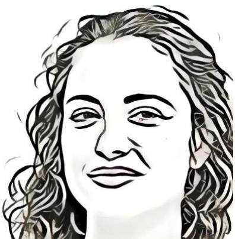
Двадцатипятилетняя дочь Стэнвика и Джослин. Она редко видится с матерью из-за её пристрастия к алкоголю. Элси не против выпить, но встречи с матерью всегда сопровождаются выпивкой и часто заканчиваются взаимными упрёками и гневом. Недавно Элси уволилась с работы социального работника. Благодаря врождённой сильной эмпатии она остро переживает страдания людей, которым помогает, и сильно из-за этого нервничает. Отчасти поэтому она вступила в «Просветлённых» в поисках душевного покоя. Элси самостоятельно научилась гипнозу и всегда интересовалась духовной стороной жизни. Она настолько хорошо чувствует других, что тем, кто с ней встречается, порой кажется, будто она читает мысли.
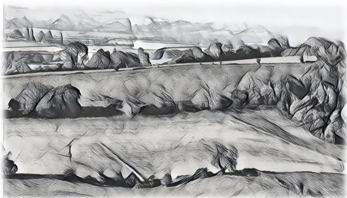
НАЧАЛО ПРИКЛЮЧЕНИЯ
Простите за письмо всем сразу и за то, что объявляюсь без предупреждения. Некоторых из вас я не видел годами, но мне нужны люди, которым я могу доверять. Так или иначе, это вы.
Поверьте, дело срочное и важное. Я бы не стал этого делать, если бы не считал необходимым. Если коротко, Элси ушла «в тень». Думаю, физически с ней всё в порядке, но она чувствует, что ей грозит опасность. Она не говорит, где находится, и настаивает, что так будет безопаснее и для меня, и для неё.
Она всегда была девочкой мечтательной и впечатлительной. Уверен, она что-то неправильно поняла, но что бы ни случилось, я не хочу, чтобы она справлялась с этим одна. Если бы не это проклятое кресло, я бы уже сам отправился её искать.
Если сможете, приходите завтра в лавку. Я буду вас ждать. Пожалуйста, приходите все вместе; не звоните мне без крайней необходимости. Общайтесь как можно меньше. Пока не выясним обратного, лучше считать, что ситуация опасна.
Стэнвик Уэбб
Книжная лавка Стэнвика, Кристмас-Степс, Бристоль
Иллюстрация 1. Раздаточный материал 1 — «Сон № 7»
НЕОЖИДАННОЕ ПИСЬМО
Однажды вечером все сыщики получают письмо от Стэнвика Уэбба, которого все они так или иначе знают; подробности их знакомства указаны в листах готовых персонажей. В письме указаны адреса всех сыщиков, чтобы они могли связаться друг с другом, обменяться номерами и, если захотят, договориться о поездке на следующий день. Однако ехать сегодня уже слишком поздно, так что любые планы придётся отложить до утра.
Если кто-то из сыщиков совершит проверку Идеи за ночь, ему приснится зал заседаний, и он запомнит этот сон.
КНИЖНАЯ ЛАВКА СТЭНВИКА
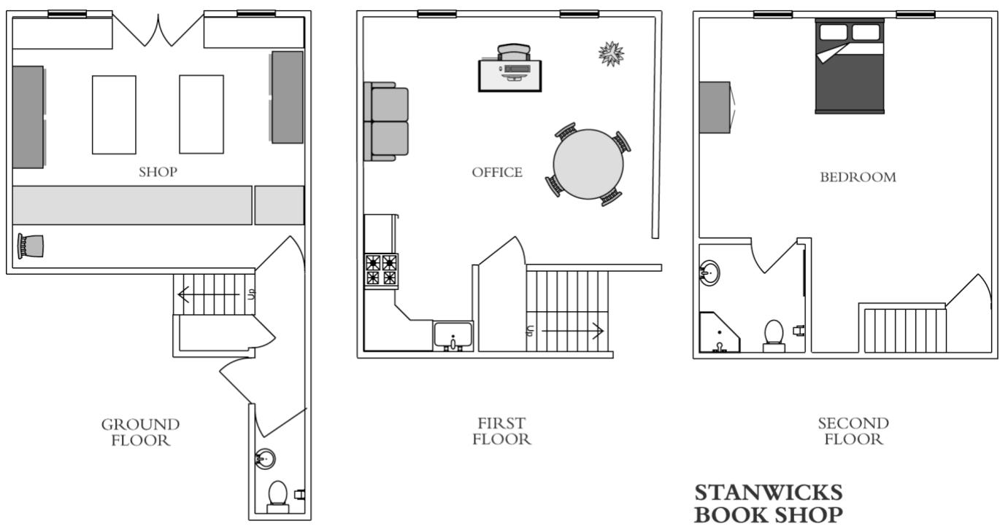
Книжная лавка Стэнвика занимает трёхэтажное здание в небольшом ряду домов в старой части города, называемой Кристмас-Степс. Спереди одна дверь и одно окно. Бокового и заднего входа нет, хотя позади здания есть небольшой двор, окружённый высокими стенами.
ПОКУПАТЕЛЬ
На двери лавки висит табличка «закрыто», но дверь не заперта. Войдя, сыщики увидят мужчину с книгой в руках. Он скажет, что ждёт продавца, но никого вокруг нет, и спросит, когда вернётся хозяин. Затем он оставит книгу на прилавке и скажет, что зайдёт за ней в другой день. Успешная проверка Идеи вызовет сильное дежавю.
ВЕРХНИЕ ЭТАЖИ
На втором этаже находится кабинет Стэнвика. В стороне от лестничной площадки — единственная дверь, к которой приколота бумага со странным символом. Это знак, который прислала Элси и попросила его использовать. Если сыщики спросят о нём Стэнвика, он всё объяснит. Сам он не верит, что знак действует, но любит и доверяет дочери, поэтому использует его хотя бы ради неё.
Если сыщики позовут с лестничной площадки, Стэнвик отзовётся и пригласит их войти. Успешная проверка «Внимание» позволит заметить на его шее небольшой кулон с тем же символом. Это ещё одна вещь, присланная Элси.
ЧТО ЗНАЕТ СТЭНВИК
Стэнвик отправил сыщикам письмо на следующий день после того, как получил письмо от Элси. Он пытался позвонить ей и на домашний, и на мобильный телефон, но оба сразу переключаются на голосовую почту.
Стэнвик охотно покажет сыщикам письмо Элси. Он выполнил её просьбу насчёт странных символов, которые она ему прислала. Он очень беспокоится за Элси и хочет, чтобы сыщики выяснили, где она, и привели её к нему или, по крайней мере, убедились, что она в безопасности, и помогли ей чем смогут. Он также хочет узнать, кто эти «плохие люди». Элси всегда была мечтательной девочкой, и он надеется, что она неверно поняла ситуацию. Однако, работая социальным работником, она сталкивалась с плохими людьми, и он задаётся вопросом, не они ли втянули её в это дело.
У Стэнвика есть ключ от квартиры Элси. Он отдаст его сыщикам и предложит начать поиски оттуда. Если сыщики спросят, когда он в последний раз разговаривал с Элси, он ответит: около двух недель назад. Тогда она уволилась с работы социального работника и с воодушевлением говорила о будущем. Если в группе есть Джослин, Стэнвик попросит её забрать из квартиры всё, что может иметь для них эмоциональную ценность. Он даст сыщикам свой номер мобильного, если они ещё его не знают.
Папа,
Я связалась с плохими людьми. Я уехала туда, где они меня не найдут, но боюсь, что они могут добраться до тебя. Они умеют узнавать, что известно людям, поэтому я не могу сказать, где нахожусь.
Я предупредила хозяина квартиры, что съезжаю. Аренда оплачена ещё на месяц, но возвращаться я не буду. На следующей неделе я договорилась о вывозе вещей. Всё необходимое у меня с собой. Меня там нет, не ищи меня. Возможно, за квартирой следят.
Я собираю доказательства, чтобы разоблачить их — через СМИ или по закону, а если материалов хватит, то и тем и другим способом. Я бы рассказала больше, но знаю, что ты попытаешься всё исправить. Только на этот раз, папочка, боюсь, тебе это не под силу.
Я прислала тебе талисманы на удачу: один носи на шее, а другой приколи к стене или двери комнаты, где находишься. Знаю, ты не веришь в духовное, но поверь: они работают. Ты всегда говорил, что необязательно понимать, как действует инструмент, если он делает своё дело. Примени этот принцип и здесь. Если не можешь, сделай это потому, что любишь меня и я тебя попросила.
Пожалуйста, береги себя. Скоро напишу снова. Люблю тебя.
Элси xxx
Раздаточный материал 2 — «Сон № 7»
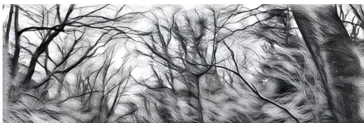
УХОД ИЗ КНИЖНОЙ ЛАВКИ СТЭНВИКА
БЕЗЛИКИЙ МУЖЧИНА
Покидая книжную лавку Стэнвика, сыщики при успешной проверке «Внимание» заметят в верхнем окне человека, похожего на того, кто выглядывает из-за чулочной маски, натянутой на лицо. Когда они посмотрят снова, у мужчины действительно будет лицо; он кивнёт в знак приветствия и отойдёт от окна. Если осмотреть все здания вдоль лестницы Кристмас с верхних этажей, из множества окон будут выглядывать люди. Стоит посмотреть ещё раз — и они исчезнут. Потеря РАС: 0/1.
ПОКУПАТЕЛЬ
Мужчина, стоявший в книжной лавке, окажется снаружи, на ступенях. Невзначай он спросит сыщиков, не вернулся ли хозяин лавки. Ответить ему или нет — решает сам сыщик.
КВАРТИРА ЭЛСИ
Квартира Элси находится на Глостер-роуд. Это однокомнатная квартира над прачечной самообслуживания. Дверь почти незаметна сбоку здания, где расположена прачечная. Если у сыщиков есть ключ Стэнвика, они войдут без происшествий, хотя в прачечной сидят двое Просветлённых и ждут, не вернётся ли Элси. Успешная проверка «Внимание» одного из сыщиков позволит заметить, что кто-то (не из Просветлённых) снова и снова опускает монету в один из сушильных барабанов. Он прекратит, когда сыщики войдут в прачечную. Если спросить его, зачем он постоянно бросал монеты в сушилку, мужчина ответит, что клал лишь необходимое количество; поступить иначе было бы неприлично. Ответ покажется странным. Просветлённые не обратят внимания на сыщиков, пока те не войдут в квартиру Элси; тогда они проявят к ним живой интерес.
В квартире Элси есть небольшая кухня-столовая-гостиная открытой планировки, ванная и двуспальная спальня в задней части. Все коммунальные услуги ещё подключены, включая стационарный телефон и Wi-Fi. В спальне стоит письменный стол, рядом с ним — корзина для бумаг. В корзине лежит листовка — передайте сыщикам раздаточный материал 3.
ДНЕВНИК ЭЛСИ
Дневник Элси спрятан под матрасом. Она слишком поздно поняла, что в спешке забыла его, но не считает его настолько важным, чтобы рисковать и возвращаться. Это скорее личный журнал, чем дневник: записи есть не за каждый день. На чтение уйдёт пара часов. Поначалу Элси записывала мысли и рассказывала о работе социального работника. Очевидно, работа угнетала её. Она с большим сочувствием пишет о своих подопечных — настолько, что чувствует их боль.
ПРОСВЕТЛЁННЫЕ
Просветлённые при жизни, достойные после смерти
Вам кажется, что мир вас не понимает? Что судьба не исполнилась? Вы ищете высшую цель?
Тогда приходите в один из наших центров благополучия и начните путь к новой версии себя.
ПРОСВЕТЛЁННЫЕ — ярким умам открыты яркие перспективы. Начните свой путь сегодня.
www.looktothestars.co.uk
Раздаточный материал 3 — «Сон № 7»
Краткое содержание дневника Элси
В начале дневника Элси пишет о своих мыслях и работе социального работника. Работа вызывает у неё сильный стресс. Она с большим сочувствием относится к подопечным — настолько, что буквально разделяет их боль. В этот период она несколько раз упоминает посещения своего «тайного места», которое находится «возле дома папы».
Элси решает уйти с работы и в конце концов увольняется после нескольких занятий в центре благополучия: там ей помогли открыть своё «истинное я». Она решила проводить консультации, самостоятельно выбирая клиентов и избегая особенно тяжёлых случаев, а при необходимости применять гипнотерапию. Похоже, она стала гораздо счастливее.
Элси воодушевлена, когда старший член организации приглашает её в руководящий комитет. Она узнаёт, что туда берут лишь тех, кто проявил выдающиеся интеллектуальные способности. Её необычайная эмпатия выделила её среди прочих. Дела идут хорошо, и ей предлагают работу на полный день. В последней записи она рассказывает о посещении места под названием Институт.
Раздаточный материал 4 — «Сон № 7»
Если дневник прочитает Милтон и успешно пройдёт проверку «Идея», он вспомнит место неподалёку от коттеджа Стэнвика в Южном Глостершире, куда Элси однажды его водила. Может быть, она скрывается там?
УХОД ИЗ КВАРТИРЫ ЭЛСИ
Бойфренд
Когда сыщики выйдут из квартиры (или раньше, если Хранитель захочет ускорить события), в коридоре окажутся двое Просветлённых — Джонатан и Дэвид. Оставили ли сыщики дверь открытой? Джонатан заявит, что он бойфренд Элси, и спросит, друзья ли сыщики Элси и не знают ли, где она. Оба будут вежливы и приветливы, но успешная проверка «Психология» против Джонатана покажет, что он скорее злится из-за исчезновения Элси, чем переживает. Сыщики сами решат, как отделаться от Дэвида и Джонатана. Джонатан настоит на том, чтобы дать им свой номер мобильного телефона.
Автобус
Когда сыщики выйдут из квартиры Элси, мимо проедет автобус. Лица всех пассажиров покажутся размытыми и бесформенными, словно они в масках; их головы будут странно вибрировать. Когда автобус проедет, в заднем окне сыщики увидят мужчину в сером костюме, белой рубашке и красном галстуке, который смотрит прямо на них. Это «человек-ми-го», следящий за ними внутри Конструкта.
САЙТ ПРОСВЕТЛЁННЫХ
Сайт Просветлённых (www.looktothestars.co.uk) очень хорошо оформлен: чистая графика, спокойные цвета, но почти нет содержимого — по сути, там повторяется информация из листовки. Перечислены все центры благополучия: большинство находятся в городах Великобритании, но некоторые — за рубежом. Среди них Лондон, Бирмингем, Кардифф, Глазго, Манчестер, Лидс, Ноттингем, Лиссабон, Хьюстон и Нью-Йорк. Игроков может удивить, сколько таких центров существует. Особый интерес для сыщиков представляет филиал в Бристоле — именно его посещала Элси.
ЦЕНТР БЛАГОПОЛУЧИЯ ПРОСВЕТЛЁННЫХ
Бристольский филиал Просветлённых скрывается у всех на виду на Колстон-авеню в Старом городе: неоклассическое здание зажато между более современными офисными постройками. Раньше это была церковь; Просветлённые купили её для своих «служб». Придут ли сыщики к центру днём или ночью, стоит им поднять взгляд — у окна они увидят человека-ми-го, поправляющего галстук. Он посмотрит в сторону сыщиков, но не подаст виду, что заметил их.
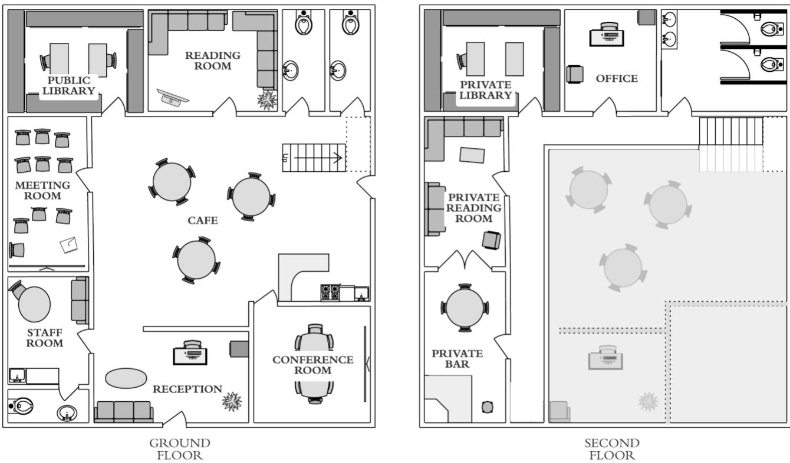
Проверка «Взлом» позволит открыть железную калитку перед входной дверью, которую запирают по ночам; калитку также можно взломать подходящим инструментом или перелезть через неё, пройдя проверку «Лазание». Чтобы открыть входную дверь, потребуется проверка «Взлом»; выбить её можно успешной трудной проверкой СИЛЫ. Центр благополучия выходит на оживлённую дорогу, поэтому сыщикам важно не попасться на глаза.
В рабочие часы и во время вечерних собраний любой желающий может войти в здание. Приветливый администратор охотно поделится листовками Просветлённых и ответит на вопросы. Администратор всегда принадлежит к ступени «учёный» и искренне увлечён группой. На стене висит расписание мероприятий; сыщиков будут приглашать на встречи под следующими заголовками:
- Трансгуманизм — может ли человеческий разум существовать без биологического носителя?
- Нейронные связи — почему памяти нельзя доверять.
- Гипнотерапия — раскройте свой потенциал, избирательно редактируя собственное сознание.
- Сновидения — так ли реальны миры снов, как мир бодрствования?
Администратор предложит записать сыщиков на мероприятия и попросит их имена и контактные данные. Возможно, это заставит сыщиков нервничать.
Сыщики могут свободно осмотреть первый этаж: там есть библиотека, комната отдыха и кафе. Если они попытаются подняться выше, их вежливо остановят. На настойчивое или агрессивное поведение отреагирует охрана.
На втором этаже находится библиотека с более интересными книгами, некоторые из них посвящены мифам Ктулху, а также читальный зал с баром. Там есть и запертый кабинет. В нём хранится информация о 4 ступенях организации и об ускоренном «вознесении». Упоминается место под названием Институт в Уилтшире, похоже, своего рода главный офис. Тех, кого выбрали для вознесения (в списке таких людей сыщики найдут имя Элси), отправляют на оценку в Институт. Некоторое время Элси была единственной избранной.
На второй этаж допускают только тех, кто достиг как минимум статуса «всезнающий»; у сыщиков нет времени получить его. Другой способ попасть туда — проникнуть внутрь: можно перелезть через трёхметровую стену позади здания и взломать боковую дверь. У двери 20 ПЗ; её можно открыть проверкой навыка «Взлом» или выбить при трудной сложности. Задней двери не видно с улицы, так что сыщики смогут действовать без помех.
КОТТЕДЖ СТЭНВИКА
Коттедж Стэнвика находится в Южном Глостершире, меньше чем в часе езды от Бристоля. Это дом с двумя спальнями на участке площадью два акра. Участок окружён густой изгородью из огнецвета; к воротам в конце дорожки ведёт проезд. После получения письма Элси Стэнвик сюда не возвращался. Цепь, которой обычно запирают ворота, аккуратно перекушена, а сами ворота открыты. У дома припаркован чёрный Ford Mondeo; внутри сидят двое Просветлённых. Они скажут, что дружат со Стэнвиком, и спросят сыщиков, не знают ли они, где он. Просветлённые неизменно вежливы и уйдут, если их попросить. Они всего лишь ищут Элси. Отъехав, они попробуют следить за сыщиками в бинокль — успешная проверка «Внимание» позволит это заметить. Если сыщики хотят действовать незаметно, им придётся дождаться темноты или разобраться с людьми Просветлённых более решительно.
Стэнвик жил почти как отшельник, готовый к выживанию в дикой местности. На кухне достаточно консервов и бутилированной воды, чтобы прожить месяц. Земля вокруг коттеджа — слегка заросший луг. Стэнвик подстригает траву бензиновой газонокосилкой с сиденьем; она стоит в сарае вместе с несколькими канистрами топлива. Возле коттеджа есть огород: там растут морковь, лук, картофель и вьющаяся фасоль. В теплице Стэнвик выращивает помидоры и зелень.
В запертой металлической коробке в дальней комнате лежат незарегистрированный дробовик и самозарядный пистолет Browning Hi-Power, добытые через армейские связи. Если сыщики захотят, они смогут некоторое время отсидеться здесь. Ключ найдётся в кувшине на кухне: для этого нужно обыскать помещение и успешно пройти проверку «Внимание». Коробку также можно открыть проверкой «Взлом».
ХИЖИНА В ЛЕСУ
Укрытие Элси можно найти, обыскав поля возле коттеджа Стэнвика, или вспомнив о нём благодаря Милтону. Элси живёт в палатке неподалёку от заброшенной хижины в лесу — это место она нашла ещё девочкой. Если почувствует угрозу, она соберёт палатку и снаряжение и уйдёт.
Милтон может вспомнить заброшенную лесную хижину. Если же сыщики всерьёз возьмутся за поиски на полях вокруг коттеджа Стэнвика, проверки навыков «Чтение следов», «Выживание» или «Внимание» приведут их в лес примерно в полутора километрах от коттеджа. До этого места не доехать на машине — путь придётся проделать пешком.
Глядя на лес, сыщики заметят тонкую струйку дыма. Это дым от костра Элси, но позвольте сыщикам самим сделать выводы. Подойдя к лесу, они увидят фигуру в капюшоне, которая идёт им навстречу. Она движется судорожно и с огромным трудом, словно борется с тяжёлым увечьем. В ней есть нечто глубоко нечеловеческое. Сыщики не поймут, что так их предупреждает подсознание. Успешные проверки «Внимание» позволят заметить, что человек-ми-го наблюдает за ними с далёкого холма.
ПЕРЕМОТКА
Подсознание сыщиков знает: в лес идти нельзя. Там они вспомнят, что Элси загипнотизировала их и заставила забыть, а воспоминание выдаст ми-го её укрытие. Ми-го уже направляют Зачарованных всезнающих головорезов в район отцовской хижины Элси, опираясь на воспоминания сыщиков из Конструкта 7. В реальном мире сыщики опасно близки к тому, чтобы привести Просветлённых прямо к Элси.
Где-то в глубине сознания сыщики это знают, даже если не помнят почему, и все вместе попытаются проснуться. Им покажется, будто они потеряли сознание. Успешные проверки «Идея» позволят вспомнить «сон» из реального мира — прочтите или раздайте один из ещё не пережитых ими снов. Хорошо подойдут «Уборщик» или «Монолит».
Конструкт «перезапустит» сыщиков и вернёт их к тому, чем они занимались до того, как пошли по тропе в лес.
ПОСЛЕДНЕЕ ПРЕДУПРЕЖДЕНИЕ
Если сыщики продолжат путь и снова направятся к лесу, хромой мужчина опять подойдёт к ним. Он откинет капюшон: лица у него нет, словно он носит плотно прилегающую маску. Маска примет черты одного из сыщиков, затем по очереди — каждого из них, включая знакомое им лицо Элси, и будет постоянно меняться. «Не ходите в лес», — донесётся издалека голос фигуры, полный боли и усилия. «Вам нельзя идти в лес!» Наконец лицо примет облик человека-ми-го. Тело фигуры сведёт судорогой, затем оно начнёт неудержимо вибрировать и в конце концов исчезнет в одно мгновение. Эта фигура — подсознание сыщиков, пытающееся не дать им вспомнить, что Элси в лесу, прежде чем ми-го заметят аномалию и удалят её из Конструкта.
ЖИТЬ ИЛИ УМЕРЕТЬ
Возможно, сыщики не поймут, что перед ними важный выбор. Если они решат не идти в лес, то дадут Элси шанс избежать лап Просветлённых в реальном мире. Они снова потеряют сознание и очнутся в своей машине; при них будут несколько улик от Элси. Именно так всё произошло в реальности после гипноза: она оставила им необходимые сведения, но не сказала, где находится.
Если они пойдут в лес, то получат те же улики, но «вспомнят» то, что пытались забыть, и тем самым выдадут Просветлённым местонахождение Элси.
ВСТРЕЧА С ЭЛСИ
Если сыщики не попытаются скрытно пробраться в лес, Элси услышит их приближение и постарается уйти. Сыщики найдут хижину, но Элси скроется среди деревьев, опасаясь, что её схватят Просветлённые. Если они позовут её или она их узнает, её можно убедить выйти и поговорить — но при одном условии: все согласятся, что после разговора она загипнотизирует их, чтобы они не запомнили, где её нашли. «Они умеют вытягивать знания», — скажет Элси. Возможно, сыщики поймут, что зря пришли, и согласятся на гипноз, но будет уже поздно. Раньше этот план срабатывал, однако теперь сыщики находятся в Конструкте 7, и ми-го с союзниками уже знают, где они нашли Элси, и немедленно отправляют туда людей в реальном мире.
Элси украла у Зачарованных книгу и научилась создавать Старший знак. По просьбе сыщиков она покажет им, как сотворить это заклинание.
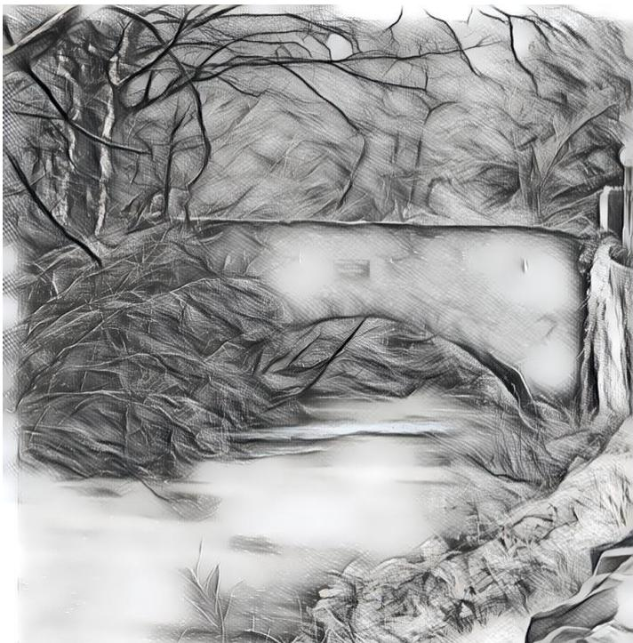
Что случилось с Элси
Элси охотно расскажет всё, что знает о Просветлённых и Институте, но сперва её придётся убедить, что сыщики поверят её словам: «Вы решите, что я сумасшедшая, если я вам расскажу». Когда сыщики её успокоят, она объяснит, что Просветлённые служат прикрытием для куда более зловещей организации. Элси сочли человеком, заслуживающим особого внимания, и быстро провели по ступеням Просветлённых. Её успокаивали и поручали читать лекции о её эмпатических способностях и гипнотерапии. Элси обрела цель и признание, которых, насколько она помнила, ей давно не хватало. Её спросили, хочет ли она войти в «руководящий комитет» группы, а затем отвезли в Институт, где мужчина в сером костюме незаметно провёл оценку. Естественно, мужчина проявил к ней большой интерес, и её отметили для «вознесения». Той ночью Элси тревожило, что она никак не могла понять человека в костюме, а также страх и ужас, которые ощущала в здании. Она тайком вышла из комнаты и исследовала здание, где обнаружила «операционную» и ужасную правду: людям вырезали мозг. В детстве Элси ненавидела лагеря, куда её возил отец, но навыки выживания и уклонения, которым он её научил, оказались бесценны: она сбежала из Института и скрылась.
Элси попросит сыщиков сделать всё возможное, чтобы помешать этой организации. У Просветлённых много центров благополучия, но штаб-квартира находится в Институте. Она просит сыщиков отправиться туда, собрать улики и спасти тех несчастных, которых собираются прооперировать. Элси не станет призывать их нарушать закон, но и отговаривать не будет, если сыщики к этому склонны. Она поддержит любые действия, мешающие работе Института и Просветлённых в целом, срывающие её или уничтожающие.
Если сыщики расскажут о странных событиях, которые с ними произошли, Элси обеспокоится, пристально посмотрит одному из них в глаза и поймёт, что его тревожит. Она скажет, что в последнее время ему пришлось нелегко: поручение отца вернуло неприятные воспоминания, а в состоянии стресса разум способен сыграть злую шутку. Элси надеется, что теперь, когда сыщики её нашли и смогут заверить отца, что с ней всё хорошо и она ведёт себя разумно, все они обретут душевный покой.
УХОД ОТ ЭЛСИ
Сыщики могут решить остаться с Элси и защитить её. Она отговорит их: в одиночестве ей проще не попасться. Сыщики могут предложить ей перебраться в другое место. Элси готова выслушать предложения, но хорошо знает эти края и здесь умеет действовать лучше всего. Успешная проверка «Убеждение» может заставить её уйти. Помните: всё это происходит в Конструкте, поэтому уговоры не повлияют на её действия в реальном мире.
Если сыщики настоят на том, чтобы остаться, ночью нападут Зачарованные. Огнестрельного оружия у них не будет; они будут одеты в чёрное и балаклавы. Насколько известно сыщикам, в реальности этого не происходило, хотя из-за того, что сыщики выдали местонахождение Элси своими воспоминаниями, там вполне может происходить нечто подобное. Просветлённые потребуют выдать Элси и заявят, что не хотят причинять вреда. Вероятно, сыщики откажутся. Начнётся нападение. Оно будет напоминать кошмар: это воплощение худших опасений сыщиков о будущем, созданное их общим подсознанием. Пусть сцена разыграется до конца — в Конструкте сыщики не могут по-настоящему «умереть». В конце концов с неба прилетит Охотничий ужас и утащит Элси. Сыщики могут надеяться отыскать её в Институте.
Если сыщики согласятся уйти и пройти гипноз, Элси усадит их перед собой и поднимет палец. Она попросит следить за пальцем и постарается их расслабить: пусть представят, будто спускаются по длинной лестнице в место, где им будет совершенно спокойно. Голос Элси мягок и умиротворяет. Несмотря на всё случившееся, сыщики начнут расслабляться и представят, что спускаются до конца лестницы. Затем они очнутся в машине — предположительно там, где оставили её у коттеджа Стэнвика.
ПОБЕГ
Сыщики могут вернуться к машине разными способами: они подошли к лесу, поняли предупреждения и ушли; решили уйти после «Перемотки»; или нашли Элси, и она загипнотизировала их. Если сыщики не входили в лес и тем самым не выдали ми-го местонахождение Элси, Конструкт будет куда настойчивее мешать им выбраться. В бардачке машины они найдут письмо от Элси и подвеску из тростника на кожаном шнурке.
Не тревожьтесь, если вам кажется, что в памяти есть пробел. Вы согласились позволить мне загипнотизировать вас, чтобы вы не запомнили, где меня нашли. Но вы всё же меня нашли — живой и невредимой. И я многое вам рассказала. Вот краткое содержание:
- Просветлённые служат прикрытием для жестоких экспериментов над людьми с выдающимися умственными способностями. Они хотели поставить такой эксперимент на мне.
- Их штаб-квартира находится в месте под названием Институт в Уилтшире, SN13 6PG. Там проводят эксперименты.
- Разоблачите их, сорвите их планы, сделайте всё возможное, но не недооценивайте их. Они гораздо опаснее, чем кажутся.
- Скажите отцу, что я в безопасности и что он хорошо меня всему научил.
Удачи!
Элси Уэбб
Раздаточный материал 5 — «Сон № 7»
Подвеска со Старшим знаком
На кожаном шнурке висит небольшая звёздчатая подвеска из высушенного тростника. Решает Хранитель, работает ли она в Конструкте.
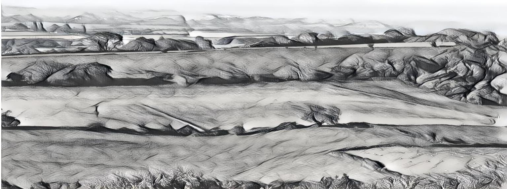
ИНСТИТУТ
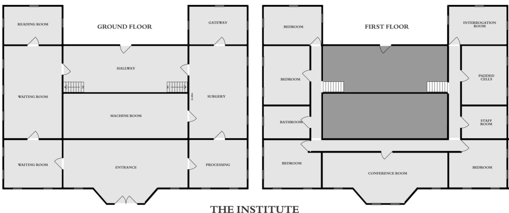
ПРИМЕЧАНИЕ ХРАНИТЕЛЮ
Сыщики прибудут в Институт независимо от того, выдали они местонахождение Элси или нет. Ми-го не интересует эта часть их путешествия по Конструкту, поэтому весь эпизод пройдёт в точности так, как сыщики его помнят, но будет искажён и дополнен так, как способно только человеческое подсознание. Их не покинут дурные предчувствия и страх; происходящее будет казаться сном, потому что в глубине души — даже если они этого не помнят — сыщики точно знают, что им предстоит увидеть.
ОСМОТР ИНСТИТУТА
Институт занимает неоготическое здание, содержание которого, должно быть, требует немалых затрат. Оно расположено в живописной сельской местности, в конце подъездной дороги длиной около полумили. Здание окружено неприметной, но надёжной стеной и оградой. Днём его видно сквозь деревья, а ночью оно залито прожекторами. На первый взгляд подойти к нему трудно, но осторожность и хитрость помогут игрокам проникнуть внутрь, если они решат действовать скрытно.
У въезда в конце дороги стоит сторожка, где сидит охранник. Он откроет ворота всем, у кого есть уважительная причина посетить Институт, — в том числе сыщикам, если те сумеют придумать правдоподобное объяснение. Он откроет ворота даже при неправдоподобном объяснении, но сыщики об этом не знают.
Как бы сыщики ни подъехали к Институту и в какое бы время ни пришли, в окне одного из верхних этажей они увидят человека-ми-го. Он пьёт чай и смотрит прямо на сыщиков. Поставив чашку на подоконник, он поправит галстук и скроется из виду.
Первый этаж
Вход
Входные двери открыты. Здесь никого нет. На столе лежат материалы «Просветлённых» — сыщики наверняка уже видели подобные в Центре здоровья.
Комнаты ожидания
Это уютные гостиные, где кандидаты на Вознесение — сознательно или нет — ждут своей участи. Здесь никого не будет.
Читальный зал
В читальном зале много книг по науке, математике, биологии и антропологии. Возможно, удивительно, но томов о мифах здесь нет. «Просветлённым» не нужны бредни пророков и безумцев: лучшие знатоки мифов — Ми-го с Юггота.
Подготовительная
Посреди комнаты стоит нечто похожее на стоматологическое кресло, но на подлокотниках и подножках есть ремни, и даже отдельный ремень для головы. Здесь готовят к путешествию тех, кому повезло быть избранным для Вознесения. Одни приходят добровольно, иногда загипнотизированные Ми-го; других двое крепких санитаров силой усаживают в кресло и пристёгивают. Затем им вводят сильные парализующие препараты, чтобы полностью обездвижить мышцы, но, к несчастью, не избавить от боли. Проверка навыка Медицина раскроет природу препаратов. Узнав правду, потеряйте 0/1d4 Рассудка.
Операционная
Операционная устроена так, чтобы Ми-го было удобно работать, поэтому её размеры покажутся сыщикам странными. Рабочие поверхности широкие и низкие, но прежде всего сыщики заметят обнажённые человеческие тела, висящие в воздухе, будто ни на чём не держась. Это вознесённые, чьи мозги уже находятся в контейнерах в Машинном зале. Хирургические разрезы невозможно обнаружить: по неизвестной причине пришельцы безупречно восстановили макушки несчастных. Тела чистые, без малейших признаков разложения. Однако сыщиков совершенно потрясёт то, что тела выглядят точь-в-точь как их собственные. Увидев это, потеряйте 1/1D6 РАС. Так подсознание сыщиков пытается сообщить им, что происходит на самом деле.
Двери в Зал Врат и Машинный зал отличаются от всех остальных дверей в доме: они многоугольные, с маленькими шестиугольными окошками из прозрачной керамики, сквозь которые можно различить очертания и движение, но не более того. Под окнами — странное выпуклое скопление проводов. Если дотронуться до них, двери разъедутся; за вошедшими они закроются.
Машинный зал
Попасть в Машинный зал можно только из Операционной. Здесь очень темно — примерно как в полдень на Плутоне. Сыщики кое-как смогут что-то разглядеть, но им пригодился бы источник света. Из середины комнаты, где находится Конструкт 7, доносится тихое, почти неразличимое гудение.
В сердце Конструкта 7 стоит чёрный монолит размером примерно с мейнфрейм, но на этом сходство заканчивается. Его поверхность из странного керамического вещества, по-видимому, бесшовна; по ней постоянно пробегают зелёные огни, складываясь в многоугольные линии. На монолите есть буква, символ или руна, пульсирующая, словно медленный удар сердца; она похожа на цифру «7». Монолит оплетает подобная живому организму паутина из светящейся зелёной слизи, которая прилипнет к человеческой коже при прикосновении. Конструкт питается человеческой биомассой. Её запас содержится в большом яйцевидном резервуаре из того же органического зелёного вещества, которым покрыт монолит; резервуар соединён с ним. Если сыщики проткнут мешок, на пол выплеснутся разжиженные части человеческих тел, что вызовет потерю 1/1d4 РАС.
К Конструкту подсоединены контейнеры с мозгами Ми-го; они лежат на передвижных столах вроде больничных каталок, по одному на каждого сыщика. На контейнерах появились вполне человеческие этикетки с фамилиями сыщиков. В реальном мире сыщики обнаружили Конструкт, но этикетки — порождение их собственного сознания, вновь пытающегося истолковать этот кошмар. Увидев этикетки, потеряйте 1/1d8 РАС. Пусть сыщики сами сделают выводы. Человек-ми-го ждёт наверху, чтобы всё объяснить, когда придёт время.
Зал Врат
В комнате нет ничего, кроме огромного круга на дальней стене, напротив входа. Внутри круга — самая чёрная тьма, какую сыщики когда-либо видели. Круг — врата на планету Юггот.
Если кто-нибудь просунет сквозь врата руку (или другую часть тела), он почувствует леденящий, ошеломительный холод и сразу потеряет 1 ПЗ; потеря будет повторяться каждый раунд. Если оставить руку во вратах надолго, она вмёрзнет, и персонаж лишится конечности. Инстинкт подскажет ему отдёрнуть её. Если просунуть лицо, персонаж ощутит убийственный холод и ветер скоростью более 200 миль/ч, начнёт задыхаться из-за отсутствия кислорода и потеряет 1d3 ПЗ. Он быстро умрёт, если не отдёрнет лицо. Если открыть глаза, просунув голову во врата, можно ненадолго увидеть поверхность Юггота. Сыщики не могут попасть туда, если только они не находятся в контейнере для мозга. Вероятность увидеть Ми-го на поверхности планеты — 30%; это вызовет соответствующую потерю РАС. Если персонаж сойдёт с ума, он останется неподвижным и умрёт от удушья, а его лицо замёрзнет. Товарищи могут спасти его, если достаточно быстро вытащат обратно.
Коридор
Сзади здания есть наружная дверь и лестница, ведущая на второй этаж.
Второй этаж
Спальни
В этих комнатах могут останавливаться гости и сотрудники Института.
Сыщики не найдут здесь ничего интересного.
Комната персонала
Люди-союзники Ми-го и руководители «Просветлённых» могут при необходимости пользоваться этой комнатой.
Камеры с мягкими стенами
Сейчас эти комнаты пусты, но к стенам камер прикреплены ремни и фиксаторы. Потенциальных кандидатов с необычными склонностями ума, которые при этом могут быть опасны, удерживают здесь до Вознесения.
Комната допросов
В комнате стоит кресло, похожее на кресло в Подготовительной. На столах вокруг разложен внушительный набор орудий для пыток. Сыщики заметят, что пол выложен плиткой и наклонён к стоку, чтобы кровь и другие жидкости тела можно было легко смыть.
ФИНАЛЬНАЯ ВСТРЕЧА
Эта сцена произойдёт, если сыщик войдёт в конференц-зал Института после посещения Операционной и Машинного зала, либо в любой момент, когда Хранитель сочтёт это уместным. Сыщики окажутся в большой комнате, которую сразу узнает каждый, кому снилась Конференц-комната. Они увидят человека в костюме, который следил за ними. Он стоит к ним спиной, смотрит в окно и пьёт чай. Кажется, время остановилось: двигаться и говорить может только мужчина в сером костюме. Он ставит чашку и поворачивается к сыщикам, говоря странно модулированным голосом с необычными ударениями и паузами.
«Наконец-то мы встретились. Или, пожалуй, „впервые“. А может, правильнее сказать: „впервые и в последний раз“. Наверное, вы задаётесь вопросом, кто я. Но важнее не то, кто я, а то, где вы находитесь и что знаете. Именно это очень интересует моих нанимателей. Всё это — способ добраться до понимания. Ничего из происходящего нельзя назвать физическим. Всё здесь — у вас в голове, лишь немного обогащённой моими нанимателями. Всё, что вы помните, и то, чего не помните. Всё, что вам снилось и что вы воображали. Решать вам, что реально, а что нет».
Если сыщики раскрыли местонахождение Элси:
«Мы хотим поблагодарить вас за то, что вы нашли человека, представляющего большой интерес для моих нанимателей. Вы могли бы многого добиться, если бы только сумели освободить разум от тела, а мы можем вам в этом помочь. Но теперь вам придётся ненадолго уйти. Скорее всего, вы даже этого не заметите. До тех пор, пока снова не сможете нам помочь».
Если сыщики не раскрыли местонахождение Элси:
«На этот раз вы не смогли нам помочь. Нам придётся повторять всё снова и снова, сколько потребуется, пока мои наниматели не будут удовлетворены. Вы могли бы многого добиться, если бы только сумели освободить разум от тела, и мои наниматели пытаются вам помочь. Буду ждать возможности снова за вами понаблюдать».
В обоих случаях мир погружается во тьму. Сыщики видят лишь человека в костюме, стоящего словно в пустоте. Он разворачивается и уходит вдаль, пока не превращается в крошечную точку, которая гаснет, как изображение на старом телевизоре.
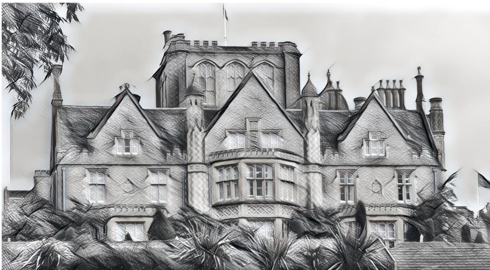
ПРИЛОЖЕНИЕ A — ХАРАКТЕРИСТИКИ ПЕРСОНАЖЕЙ
Эти персонажи основаны на подсознательных воспоминаниях о людях, которых сыщики встречали или знали в реальном мире, либо созданы Ми-го виртуально. Хранитель может менять эти характеристики по своему усмотрению; они приведены лишь для удобства.
СТЭНВИК УЭББ
СИЛ 60 ВЫН 50 ТЕЛ 80 ЛВК 55 ИНТ 65 НАР 70 МОЩ 35 ОБР 55 РАС 65 ПЗ 9 БКУ: 1d4 Комплекция: 1 СКО: 4 ПМ:7 Удача: 45
Драка 55% (17/7), урон 1D3 + 1d4. Дробовик 12-го калибра 65% (20/8), (урон 4D6/2D6/1D6). Пистолет Browning Hi-Power 65%, (урон 1d10, дистанция 15, скорострельность 2)
Навыки: Оценка 40%, Работа в библиотеке 70%, Работа с компьютером 55%, Электрика 55%, Механика 65%, Выживание 70%, Слух 55%, Внимание 50%
ЭЛСИ УЭББ
СИЛ 30 НАР 60 ВЫН 60 МОЩ 85 ТЕЛ 55 ОБР 65 ЛВК 70 РАС 65 ИНТ 90 ПЗ 9 Удача: 85
БКУ: 0 Комплекция: 0 СКО: 8 ПМ: 17
Драка 35% (17/7), урон 1D3 40% (20/8), (урон 4D6/2D6/1D6)
Дробовик 12-го калибра
Навыки: Оценка 40%, Работа в библиотеке 70%, Работа с компьютером 55%, Электрика 45%, Механика 45%, Выживание 65%, Гипноз 85%, Психология 95%, Слух 65%, Внимание 60%
ПРОСВЕТЛЁННЫЙ (ОБЫЧНЫЙ)
СИЛ 60 НАР 55 БКУ: 0 ВЫН 65 МОЩ 50 Комплекция: 0 ТЕЛ 60 ОБР 55 СКО: 8 ЛВК 25 РАС 45 ПМ: 17 ИНТ 60 ПЗ 12 Удача: 50
Драка 35% (17/7), урон 1D3
Навыки: Работа в библиотеке 60%, Работа с компьютером 55%, Электрика 45%, Внимание 50%, Слух 50%, Уклонение 10%
ПРОСВЕТЛЁННЫЙ (СИЛОВИК)
СИЛ 55 НАР 75 ВЫН 35 МОЩ 45 Комплекция: 1 ТЕЛ 70 ОБР 60 СКО: 7 ЛВК 55 РАС 45 ПМ: 9 ИНТ 65 ПЗ 10 Удача: 45
БКУ: 1D4
35% (17/7), урон 1D3 + 1D4
Навыки: Работа в библиотеке 60%, Работа с компьютером 55%, Электрика 45%, Внимание 50%, Слух 50%, Выживание 40%, Уклонение 25%
ЧЕЛОВЕК-МИ-ГО
Человек-ми-го — часть Конструкта и внутри него практически всемогущ, хотя старается вести себя как можно более по-человечески. До самого конца он будет избегать любых контактов с сыщиками.
СИЛ 99 НАР 75 ВЫН 35 МОЩ 99 Комплекция: 1 ТЕЛ 70 ОБР 99 ЛВК 99 РАС 0 ПМ: нет данных ИНТ 99 ПЗ 10
БКУ: 1D4 СКО: 7 Удача: 99
Драка 99% (17/7), урон 1D3 + 1D4
Навыки: Работа в библиотеке 99%, Работа с компьютером 99%, Электрика 99%, Внимание 99%, Слух 99%, Выживание 99%, Уклонение 99%, Делай что угодно 99%
МИ-ГО
В Институте сыщики могут встретить Ми-го.
СИЛ 55 ВЫН 45 ТЕЛ 35 ЛВК 60 ИНТ 75 НАР 0 МОЩ 40 ОБР 0 РАС 0 ПЗ 8 БКУ: 0 Комплекция: 0 ПМ: 6 Удача: нет данных
Атаки за раунд: 2
СКО: 7/13 в полёте
Ближний бой: 45% Урон: 1D6
Захват: (манёвр) уносит жертву и сбрасывает с большой высоты или
душит из-за недостатка кислорода
Броня: 0
Навыки: Уклонение 35% Потеря РАС: 0/1D6
УЖАС-ОХОТНИК
СИЛ 170 ВЫН 65 ТЕЛ 140 ЛВК 60 ИНТ 85 НАР 0 МОЩ 115 ОБР 0 РАС 0 ПЗ 20 БКУ: 3D6 Комплекция: 4 ПМ: 23 Удача: нет данных
Атаки за раунд: 2
СКО: 7/13 в полёте
Ближний бой: 45% Урон: 1D6
Захват: (манёвр) уносит жертву и сбрасывает с большой высоты или
душит из-за недостатка кислорода
Броня: 0 Навыки: Уклонение 35% Потеря РАС: 0/1D6
ПРИЛОЖЕНИЕ B — РАЗДАТОЧНЫЕ МАТЕРИАЛЫ
Простите за групповое письмо и внезапное обращение ко всем. Некоторых из вас я не видел годами, но мне нужны люди, которым я могу доверять, и так уж вышло, что это вы.
Поверьте, это срочно и важно; я бы не стал этим заниматься, если бы не считал необходимым. Короче говоря, Элси ушла «в подполье». Думаю, физически с ней всё в порядке, но она чувствует опасность. Она не говорит, где находится, и настаивает, что так безопаснее и для меня, и для неё.
Она всегда была мечтательной и впечатлительной девушкой. Уверен, она что-то неправильно поняла, но что бы там ни случилось, я не хочу, чтобы она разбиралась с этим одна. Если бы не это проклятое кресло, я бы уже отправился на поиски.
Если можете, приходите завтра в магазин. Я буду вас там ждать. Пожалуйста, приходите все вместе; не звоните, если только это действительно не понадобится. Общайтесь как можно меньше. Пока не выясним обратное, лучше считать, что ситуация враждебная. Стэнвик Уэбб
Книжный магазин Стэнвика, Кристмас-Степс, Бристоль
Иллюстрация 2. Раздаточный материал 1 — «Сон № 7»
ПРОСВЕТЛЁННЫЕ
Просветлённые при жизни, достойные в смерти
Вам кажется, что мир вас не понимает? Чувствуете, что ваше предназначение не исполнено? Ищете высшую цель?
Тогда посетите один из наших Центров здоровья и начните путь к новой версии себя.
ПРОСВЕТЛЁННЫЕ — где светлые умы создают
светлое будущее. Начните свой путь сегодня.
www.looktothestars.co.uk
Раздаточный материал 3 — «Сон № 7»
Не тревожьтесь, если чувствуете пробел в памяти. Вы согласились позволить мне загипнотизировать вас, чтобы вы не запомнили, где меня нашли, — но всё же нашли меня, живую и невредимую. Я многое вам рассказала; вот краткое изложение:
- «Просветлённые» служат прикрытием для жестоких экспериментов над людьми с выдающимися умственными способностями. Они хотели поставить опыты на мне.
- Их руководитель операций находится в месте под названием Институт, в Уилтшире, SN13 6PG. Там проводят эксперименты.
- Разоблачите их, сорвите их планы, сделайте всё, что сможете, но не недооценивайте их. Они куда опаснее, чем кажутся.
- Скажите отцу, что я в безопасности и что он хорошо меня воспитал.
Удачи!
Элси Уэбб
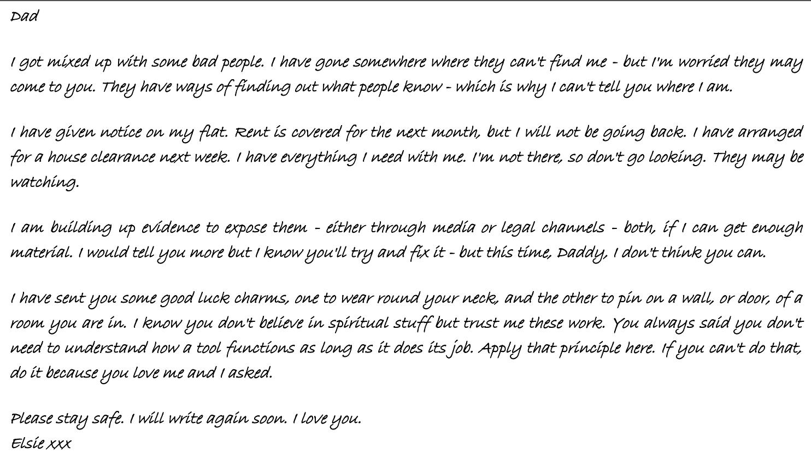
Раздаточный материал 2 — «Сон № 7»
Краткое содержание дневника Элси
В начале дневника Элси пишет о своей работе социальным работником, которая вызывает у неё сильный стресс. Она с большим сочувствием говорит о подопечных, настолько, что буквально разделяет их боль. В этот период она несколько раз упоминает посещения своего «тайного места», которое находится «недалеко от папиного дома».
Она решает, что ей нужно уйти с этой работы, и в конце концов увольняется после нескольких сеансов в Центре благополучия, которые помогли ей открыть своё «истинное я». Она решила проводить консультации, самостоятельно выбирая, с кем работать, избегая случаев, которые вызывают глубокое душевное потрясение, и при необходимости применяя гипнотерапию. Кажется, теперь она гораздо счастливее.
Она приходит в восторг, когда старший сотрудник организации приглашает её в руководящий комитет, и узнаёт, что туда приглашают только людей с выдающимися интеллектуальными способностями. Её исключительная эмпатия выделила её среди остальных. Всё складывается удачно, и ей предлагают работу на полную ставку. В последней записи она рассказывает о визите в место под названием Институт.
ПРИЛОЖЕНИЕ C — ЗАРАНЕЕ СОЗДАННЫЕ ПЕРСОНАЖИ ИГРОКОВ
ДЖОСЕЛИН ИЙВС — ПИСАТЕЛЬНИЦА, 49 ЛЕТ
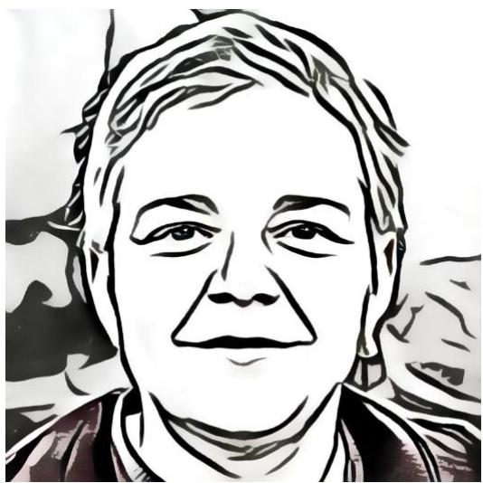
СИЛ: 45 ВЫН: 50 ТЕЛ: 55 ЛВК: 50 НАР: 30 ОБР: 65 ИНТ: 70 МОЩ: 50 РАС: 50
Удача: 50
ПЗ: 10
ПМ: 10
Бонус к урону: 0
Комплекция: 0
СКО: 7
Навыки: Бухгалтерское дело 15%, Археология 55%, Искусство/ремесло (литература) 60%, Работа с компьютером 15%, Средства 25%, Первая помощь 40%, История 50%, Работа в библиотеке 65%, Механика 25%, Оккультизм 40%, Убеждение 40%, Психология 55%, Психоанализ 25%, Внимание 45%
Предыстория
У тебя есть дочь Элси, но много лет назад ты развелась с её отцом Стэнвиком — после того, как он вернулся из Боснии совсем другим человеком. Он утратил всякую веру в человечество и стал вести себя как помешанный выживальщик: постоянно настаивал, чтобы дома был запас как минимум на две недели нескоропортящихся продуктов и бутилированной воды. Ты отчасти верила, что ранение, из-за которого его комиссовали в Боснии, он нанёс себе сам: тебе всегда казалось, что его неприступная внешность — своего рода защитный механизм. Элси навещает тебя не так часто, как тебе хотелось бы. После пары выпитых бокалов вы неизменно ссоритесь. Наверное, тебе стоит немного умерить выпивку: ты ведь выпиваешь не меньше бутылки вина в день. Ты могла бы бросить в любой момент. Конечно, могла бы, но пока не сейчас. После пары бокалов ты гораздо больше похожа на себя.
Что ты знаешь о Стэнвике
Стэнвику принадлежит книжный магазин на улице Кристмас-Степс в Бристоле. Ещё у него есть коттедж в глуши, в Южном Глостершире; если постараться, ты, наверное, сумеешь его найти. Адрес у тебя всё равно где-то записан. Со Стэнвиком вы всегда общаетесь учтиво. С тех пор как Элси выросла, ты не так уж часто с ним видишься, но тебя раздражает, что она, похоже, предпочитает отца тебе, и ты не понимаешь почему — особенно учитывая, что она постоянно на него жалуется. Ты признаёшь, что он её очень любит.
МИЛТОН ЛОУ — ПРОГРАММИСТ, 24 ГОДА
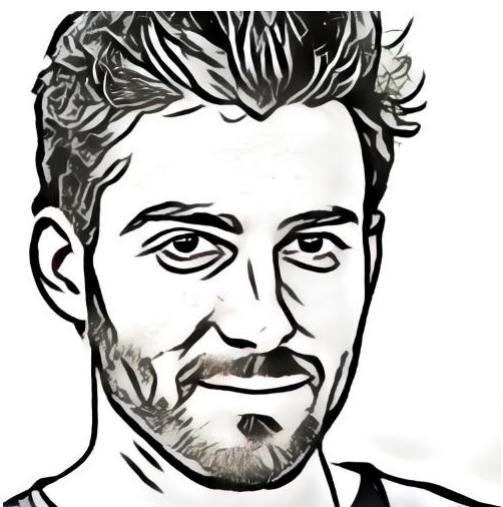
СИЛ: 60 ВЫН: 40 ТЕЛ: 55 ЛВК: 70 НАР: 50 ОБР: 65 ИНТ: 45 МОЩ: 50 РАС: 50
Удача: 45
ПЗ: 9
ПМ: 10
Бонус к урону: 0
Комплекция: 0
СКО: 9
Навыки: Работа с компьютером: 60%, Электроника 55%, Математика: 45%, Внимание: 55%, Работа в библиотеке: 65%, Слух: 50%, Механика: 20%, Электрика 50% Лазание 50%, Средства 60%
Предыстория
Ты всё никак не можешь забыть свою бывшую девушку Элси Уэбб. Она винила в вашем расставании твою героиновую зависимость, но ты считаешь, что дело скорее в том, что она поступила в университет и познакомилась с людьми, у которых якобы идеи о жизни поважнее твоих. К тому же теперь ты завязал. Почти. Ты неплохо зарабатываешь на ИТ-контрактах, и хорошо то, что они никогда не бывают постоянными: если сорвёшься, это не станет большой проблемой. Раньше ты занимался скалолазанием в ущелье Эйвон, но в последнее время уже не так часто.
Что ты знаешь о Стэнвике
Стэнвик тебе нравится. Жаль, что твой отец не такой, как он. Стэнвик держит книжный магазин на Кристмас-Степс в Бристоле; там довольно много военных книг, которые тебе по душе, ведь раньше ты занимался военно-историческими варгеймами, пока наркотики не стали интереснее. Ты пару раз бывал у него дома в Южном Глостершире. Хорошее место. Ты и сам хотел бы жить в таком доме, а не в съёмной квартире, если бы когда-нибудь смог накопить на первоначальный взнос.
ОГУСТИН ФРЕЙЗЕР — ЧАСТНЫЙ СЫЩИК, 52 ГОДА
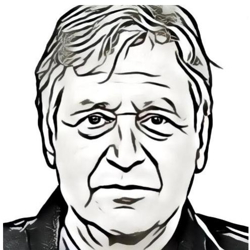
СИЛ: 60 ВЫН: 35 ТЕЛ: 50 ЛВК: 60 НАР: 50 ОБР: 55 ИНТ: 60 МОЩ: 45 РАС: 37
Удача: 85
ПЗ: 8
ПМ: 9
Бонус к урону: 0
Комплекция: 0
СКО: 9
Навыки: Фотография 60%, Обаяние 55%, Ближний бой (Драка) 45%, Первая помощь 60%, Запугивание 55%, Юриспруденция 35%, Работа в библиотеке 60%, Работа с компьютером 40%, Взлом 70%, Внимание 65%, Вождение автомобиля 75%, Средства 45%
Предыстория
Ты частный сыщик, и это не так интересно, как всем кажется. Чаще всего ты расследуешь страховое мошенничество, разыскиваешь должников или ищешь доказательства супружеской измены. Приходится делать то, что приходится, с тех пор как тебя выгнали из полиции. Ты каждый день видишь того мальчика — его маленькое тело в луже крови перед машиной. Да, в обед ты выпил пару рюмок — кто тогда не пил? — и вообще, ты участвовал в скоростной погоне. Но нет ни дня, чтобы ты не жалел, что откликнулся на тот вызов. Надо было позволить кому-нибудь другому заняться этим. Теперь тебе нести это бремя всю жизнь.
Что ты знаешь о Стэнвике
Ты кое-что сделал для Стэнвика после кражи со взломом в его магазине на Кристмас-Степс. Он не доверял полиции, но почему-то доверился тебе. Кажется, ты ему понравился. Бог знает почему. Так или иначе, ты выполнил его просьбу, и он остался доволен. Настолько, что иногда соглашался выпить с тобой. Похоже, теперь ему трудно ходить. Говорят, много лет назад, когда он служил в армии, его подстрелили в Боснии. В последний раз, когда вы виделись, у него было инвалидное кресло. Но он, похоже, не хотел им пользоваться.
КАПИТАН ЭЙНСЛИ ХЭММОНД — ОТСТАВНОЙ ОФИЦЕР, 53 ГОДА
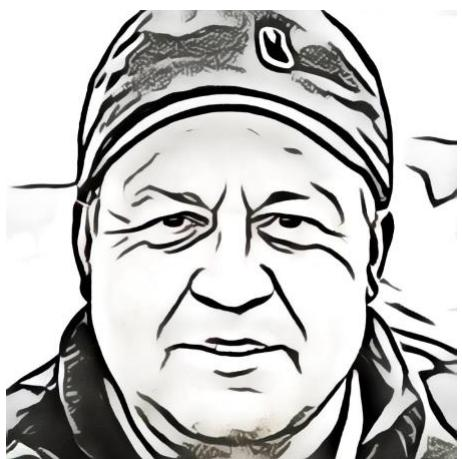
СИЛ: 40 ВЫН: 45 ТЕЛ: 70 ЛВК: 50 НАР: 45 ОБР: 70 ИНТ: 70 МОЩ: 40 РАС: 31
Удача: 65
ПЗ: 11
ПМ: 8
Бонус к урону: 0
Комплекция: 0
СКО: 7
Навыки: Стрельба (пистолет) 60%, Стрельба (винтовка/дробовик) 55%, Первая помощь 40%, Запугивание 45%, Ориентирование 50%, Психология 50%, Скрытность 50%, Чтение следов 65%, Выживание 50%, Слух 50%, Внимание 45%, Азартные игры 35%, Средства 0%
Предыстория
Ты недавно ушёл в отставку из своего полка — Чеширского полка. Уже ходят разговоры, что любимый тобой полк объединят с другим из-за сокращения государственного финансирования. Правительству и людям, похоже, нет дела до жертв, на которые мы с моими солдатами пошли ради так называемой безопасности, но всё же я скучаю по службе. С тех пор как дети поступили в университет, заняться особо нечем. Мне не хватает определённости военной жизни. Единственное, что снова заставляет меня почувствовать себя живым, — азартные игры. Я пристрастился к ним ещё в полку, но в последнее время всё стало гораздо хуже. Я пытался отыграться после пары крупных проигрышей, но ничего не вышло. Почти весь мой пенсионный фонд проигран, а обслуживание взятых кредитов обходится в целое состояние. Джанет, моя жена, ничего не знает. Я не могу ей рассказать. Да она всё равно не поймёт.
Что ты знаешь о Стэнвике
Когда-то ты служил со Стэнвиком в Боснии. Он получил пулю в колено, и на этом его военная карьера закончилась. Он был убит горем, но теперь ты ему почти завидуешь. Он ушёл из армии и был вынужден строить жизнь за её пределами. Где-то в Бристоле у него книжный магазин. Вы изредка переписываетесь по электронной почте, но не виделись много лет. И всё же он боевой товарищ, и если бы он попросил, ты сделал бы для него всё.
ВИНСЕНТ ТЕННИ — ВЫШИБАЛА, 34 ГОДА
СИЛ: 55 ВЫН: 50 ТЕЛ: 75 ЛВК: 35 НАР: 25 ОБР: 75 ИНТ: 50 МОЩ: 45 РАС: 45
ПЗ: 12
ПМ: 9
Бонус к урону: 1d4
Комплекция: 0
СКО: 7
Навыки: Средства 10%, Ближний бой (Драка) 75%, Запугивание 65%, Прыжки 50%, Психология 40%, Внимание 75%, Механика 85%, Метание 45%, Уклонение 67%, Средства 35%
Предыстория
Ты работаешь в охране, в основном вышибалой в городских барах. Кроме того, ты подрабатывал у человека по имени Гас Фрейзер, когда ему требовалось немного «внушительности», как он это называет. Тебе очень хотелось бы стать кем-то большим, но ты так и не смог осилить курс Открытого университета, который начал. Как люди вообще читают эту ерунду? Ничего ведь не понятно. С возрастом ты начал колоть стероиды: поддерживать мышечную массу становится всё труднее. Но ты никому об этом не рассказываешь.
Что ты знаешь о Стэнвике
Ты познакомился со Стэнвиком, когда попытался не пустить его в бар. Уже не помнишь почему — возможно, просто выдался скверный день. Дальше стало только хуже. Стэнвик уложил тебя на землю так, как это умеет только боевой ветеран. Впечатляюще. Потом ты разыскал его и спросил, не научит ли он тебя паре приёмов. Старик согласился и с тех пор стал тебе почти единственным другом.
КАМЕЛИЯ БРАУН — ОФИЦИАНТКА, 23 ГОДА
СИЛ: 45 ВЫН: 40 ТЕЛ: 40 ЛВК: 30 НАР: 65 ОБР: 55 ИНТ: 70 МОЩ: 45 РАС: 45
Удача: 55
ПЗ: 8
ПМ: 9
Бонус к урону: 0
Комплекция: 0
СКО: 8
Навыки: Бухгалтерское дело 25%, Искусство/ремесло (актёрское мастерство) 45%, Уклонение 65%, Слух 50%, Обаяние 45%, Убеждение 55%, Психология 50%, Работа в библиотеке 50%, Работа с компьютером 50%, Ближний бой (Драка) 65%
Предыстория
Ты давняя школьная подруга дочери Стэнвика, Элси. Стэнвик не знает, что вы с Камелией поссорились и до сих пор не помирились. Недавно ты рассталась с мужем после двух лет брака, узнав, что он заводил одну интрижку за другой. Когда ты обсуждала это с Элси, тебя раздражали её сочувствие и понимание — тебе нужна была подруга, которая разозлится на него. Ты удивилась собственной реакции на Элси и думаешь, не связана ли она с чувством вины за то, что когда-то провела ночь с Милтоном, тогдашним парнем Элси. Ты так и не простила себе этот поступок. Элси всё равно рассталась с Милтоном, но всё же ты рада, что он никогда об этом не заговаривал, и стараешься забыть случившееся. Ты училась драматическому искусству в театральной школе Бристоль-Олд-Вик, но после выпуска ничего не добилась и была вынуждена подрабатывать официанткой, чтобы сводить концы с концами. На тебя накатывают приступы депрессии; сейчас ты принимаешь прозак, который помогает с ней справляться, хотя с тех пор, как ты начала пить таблетки, у тебя появились проблемы со сном. Ты не хочешь отказываться от лекарства, потому что с ним тебе и правда намного лучше. Ты очень скучаешь по Элси и жалеешь, что так ужасно с ней обошлась.
Что ты знаешь о Стэнвике
Ты знаешь, что у Стэнвика есть книжный магазин в Бристоле. Он всегда очень мил с тобой, но даже не подозревает о половине того, что происходит между тобой и Элси. Он считает, что ты любишь её и вы очень близкие подруги. И он прав — просто сейчас между вами почти ничего нет. Ты хотела бы получить возможность всё исправить. Ты не знаешь, как Стэнвик отреагировал бы, узнав о том, что произошло между тобой и Элси.